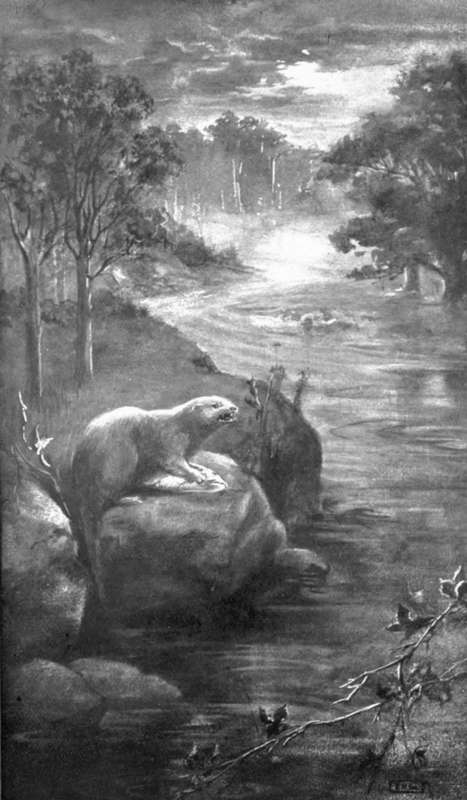

The Otter. I. The Holt Among The Alders
Description
This section is from the book "Creatures Of The Night: A Book Of Wild Life In Western Britain", by Alfred W. Rees. Also available from Amazon: Creatures Of The Night: A Book Of Wild Life In Western Britain.
The Otter. I. The Holt Among The Alders
I first saw Lutra, the otter-cub, while I was fishing late one summer night. Slow-moving clouds, breaking into fantastic shapes and spreading out great, threatening arms into the dark, ascended from the horizon and sailed northward under the moon and stars. Ever and anon, low down in the sky, Venus, like a clear-cut diamond suspended from one of its many twinkling points, glittered between the fringes of the clouds, or the white moon diffused soft light among the wreathing vapours that twisted and rolled athwart the heavens. In the shelter of the pines on the margin of the river, a ringdove, awakened by a bickering mate, fluttered from bough to bough; and his angry, muffled coo of defiance marred the stillness of the night. The gurgling call of a moorhen, mingling with the ripple of the stream over the ford, came from the reeds at a distant bend of the river. Nearer, the river, with varying cadence, rose and fell in uneven current over a rocky shelf, and then came on to murmur around me while I waded towards the edge of a deep, forbidding pool. In the smooth back-wash beyond the black cup of the pool a mass of gathered foam gleamed weirdly in the dark; and, further away, broad tangles of river-weed, dotted with the pale petals of countless flowers, floated on the shallow trout-reach extending from the village gardens to the cornfields below the old, grey church.
In one of the terraced gardens behind me a cottager was burning garden refuse; tongues of flame leaped up amid billows of smoke, and from the crackling heap a myriad sparks shot out on every side. While the cottager moved about by the fire, his shadow lengthened across the river, which, reflecting the lurid glare, became strangely-suggestive of unfathomable depths. The moorhen called again from the reeds near the ford, then flew away over the fire-flushed river and disappeared into the gloom; and a water-vole dropped with a gentle plash into the pool.
Casting a white moth quietly over the stream, I noticed beyond the shadows a round mass rising from the centre of the current, moving against the flood, and sinking noiselessly out of sight. There could be no doubt that the shape and motion were those of an otter. To continue my sport would have been in vain with such a master-fisher in the pool, so I reeled in my line, and stood still among the ripples as they circled, muttering, around my knees. Presently the dim form of the otter reappeared a little further up-stream, and I caught sight of a glistening trout in the creature's mouth.
The otter swam, with head just above water, towards the alders skirting the opposite bank, and then, turning sharply, was lost to sight near the overhanging roots of a sycamore. Immediately afterwards, a strange, flute-like whistle—as if some animal, having ascended from the depths of the river, had blown water through its nostrils in a violent effort to breathe—came from the whirlpool in the dense shadows of the pines: the otter's mate was hunting in the quiet water beyond the shelf of rock. Then a slight, rattling sound on the pebbly beach of a little bay near the sycamore indicated that the animal had landed and was probably devouring the captured fish. The leaping flames of the cottager's fire had been succeeded by a fitful glow, but the moon glided from behind the clouds and revealed a distinct picture of the parent otter standing on the shingle, in company with Lutra, her little cub.
A deserted mansion—to whose history, like the aged ivy to its crumbling walls, clung many a fateful legend—nestled under the precipitous woods in the valley. Time, taking advantage of neglect, had made a wilderness of the gardens, the lawns, and the orchards, which, less than a century ago, surrounded with quiet beauty this home of a typical old country squire. A few garden flowers still lingered near the porch; but the once well tended borders were overgrown with grass, or occupied with wild blossoms brought from the fields by the hundred agents employed by Nature to scatter seed. Owls inhabited the outhouses, and bats the chinks beneath the eaves. A fox had his " earth" in the shrubbery beyond the moss - grown pathway leading from the door to the gate at the end of the drive. A timid wood-pigeon often flew across from the pines and walked about the steps before the long-closed door. Near the warped window of the dismantled gun-room the end of a large water-pipe formed a convenient burrow for some of the rabbits that played at dusk near the margin of the shrubbery. This water-pipe led to the river's brink; and there, having been broken by landslips resulting from the ingress of the stream during flood, one of the severed parts of the tube formed, beneath the surface of the water, an outlet to a natural chamber high and dry in the bank. The upper portion of the pipe was choked with earth and leaves washed down from the fields by the winter rains.
In this hollow "oven," on a heap of hay, moss, and leaves, brought hither by the parent otters through an opening they had tunnelled into the meadow, Lutra was born. Her nursery was shared by two other cubs. Blind, helpless, murmuring little balls of fur, they were tended lovingly by the dam.
Soon the thin membrane between their eyelids dried and parted, and they awoke to a keen interest in their surroundings. Their chamber was dimly lit by the hole above; and the cubs, directly they were able to crawl, feebly climbed to a recess behind the shaft, where they blinked at the clouds that sailed beneath the dome of June, and at the stars that peeped out when night drew on, or watched the limpid water as, flowing past the end of the pipe below, it bore along a twirling leaf or rolled a pebble down the river-bed. Occasionally a salmon-pink wandered across from the shallows; for a moment or two the play of its tiny fins was seen at the edge of the pipe; and the cubs, excited by a sight of their future prey, stretched their necks and knowingly held their heads askew, so that no movement of the fish might escape their observation.
"THE BROAD RIVER, IN WHICH SHE HAD SPENT HER EARLY LIFE".
Continue to: